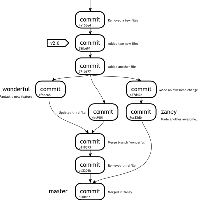
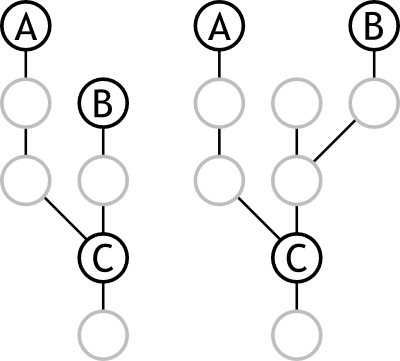

Week 4"Merge merge merge"
How does merging work?
To start with, we need to define which merging strategy we are talking about.
In Git there are multiple ways to instruct a merge to take place.
Below is a brief list of the options that you can supply to the git merge command along with a brief description of how each one affects the merge process.
We will explain the details a little more further on.
- resolve - A two headed merge strategy using a 3-way merge algorithm.
This is used by default in Git.
- recursive - A two headed merge strategy using a 3-way merge algorithm.
This algorithm looks at situations where multiple common ancestors are eligible and creates a merged tree of the common ancestors to be used as a reference.
Usually, this method has less conflicts and carries with it multiple sub-options.
- octopus - This merge strategy can merge in multiple heads.
When trying to pull multiple topic branches into a single merge, an octopus is the default method that Git will use.
- ours - Another multiple head strategy, which simply ignores all changes from the other branches.
At first it may sound like a useless idea, but it could be used to keep the history of a branch without actually keeping the branch itself.
- subtree - A much more advanced merge strategy based on the recursive which trees are adjusted to result in a better merge.
Now that we are aware of the different options available to us, let us discuss what happens when we actually perform a merge.
Let us consider the state of our repository at the end of Week 4, as shown in Figure 1.
|  |
|
Figure 6
Repository at the end of Week 4 |
|
For arguments sake, let us say that we were on the wonderful branch, and we wanted to merge the zaney branch into it.
Using a standard 3-way merge algorithm, this would mean taking our current branch, which we will call A, the zaney branch, which we will call B and a parent which we will C.
Why do we need this parent? What is it used for?
In order to merge changes from a specific file together, we need to know exactly how that file has changed over time.
In order to know that, we need to have a common starting point.
By that we mean that we need to have a state in both of the branches history, where A and B were the same.
In a version control system, this is most easily achieved by finding a commit that is common to the history of both branches.
This commit is called the Best Common Ancestor.
Usually, when developing software, the code tree will be branched at various points along the way.
Sometimes we may need to merge these branches together, or merge these branches back into the master branch.
Which ever way we do it, we will need to find a common ancestor.
Figure 2, demonstrates a couple of possible merge proposals, and one of their common ancestors.
|  |
|
Figure 2
Finding the Best Common Ancestor |
|
As you can see from the second example, branch B was created from a commit above the Common Ancestor, but the Common Ancestor remains the same.
Let us go back to our example above.
We are attempting to merge in zaney to the wonderful branch.
We need to find the C in our equation.
To do this we could pour over Figure 1.
This should yield the result to be commit 9710177.
Is there are way we can ask Git to do the same thing? The following output introduces a new command that is used to find the Best Common Ancestor for a given merge proposal.
john@satsuki:~/coderepo-af4$ git merge-base wonderful zaney
9710177657ae00665ca8f8027b17314346a5b1c4
john@satsuki:~/coderepo-af4$ git cat-file -p 9710177
tree 268f487e5c29a4b01c3a91637bac0024253fb77e
parent 55fb69f4ad26fdb6b90ac6f43431be40779962dd
author John Haskins <john.haskins@tamagoyakiinc.koala> 1301613377 +0100
committer John Haskins <john.haskins@tamagoyakiinc.koala> 1301613377
+0100
Added another file
john@satsuki:~/coderepo-af4$
In our example, git merge-base uses two parameters to speficy the two heads that we wish to merge.
We can see that the commit that Git suggests as the Best Common Ancestor is what we suggested above, 9710177.
We have reused our git cat-file command to prove that the commit is the one we suggested, as you can see, the commit messages match.
This explains how a simple merge takes place, Git will find the common ancestor, and try to merge in the differences to produce a merged version.
If the merge cannot take place, then as shown in Week 4, Git will put all the changes in the file, label them, and then raise a conflict for the user to resolve.
With the information presented here, you should now be able to reread the descriptions above and understand what is going on at a base level.
If you require further information on merging, there is a wealth of documentation and papers about merge algorithms on the Internet.
|
|